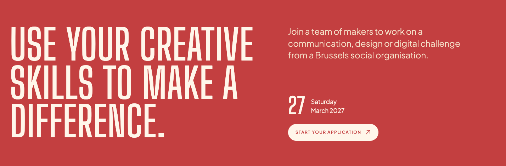

Saturday comes first.
Eight ways to read the same date: Saturday 27 March 2027. Each starts with the weekday, then keeps the rest of the date together in a clear sequence.
My first pick is D01 for a calm, direct read. Try D03 if you want “Saturday” to have more of the site’s poster character.
Current lockup: the large “27” leads the eye

Design interpretation: the numeral attracts attention before the weekday, and the two columns split the date. The alternatives explore a more natural reading order. The image above is your supplied screenshot.
Choose a reading rhythm.
Same date, palette and application action. Select any option, then see it in the hero below.